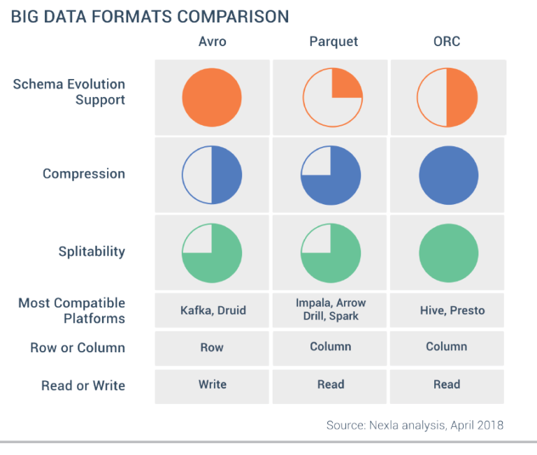

Code
ENABLE_DOWNLOAD = False
ENABLE_UNZIP = False
ENABLE_COMPUTE_ZIP_TO_PARQUET = False
ENABLE_COMPUTE_DIMENSION = False
ENABLE_COMPUTE_EVENT = False
ENABLE_SAVE_GRAPHICS_DATA = FalseENABLE_DOWNLOAD = False
ENABLE_UNZIP = False
ENABLE_COMPUTE_ZIP_TO_PARQUET = False
ENABLE_COMPUTE_DIMENSION = False
ENABLE_COMPUTE_EVENT = False
ENABLE_SAVE_GRAPHICS_DATA = FalseWe download the data from https://s3.amazonaws.com/tripdata/{year}-citibike-tripdata.zip
# from 2014 to 2023
zip_files = []
def download_data():
trip_urls = [
(year, f"https://s3.amazonaws.com/tripdata/{year}-citibike-tripdata.zip")
for year in range(2014, 2023 + 1)
]
if not os.path.exists(os.path.join('data')) :
os.makedirs('data')
for year, url in trip_urls:
basename = os.path.join('data', str(year) + "_" + 'citibike_tripdata')
zip_filename = basename + ".zip"
csv_filename = basename + ".csv"
zip_files.append((year, zip_filename, csv_filename))
if not ENABLE_DOWNLOAD : continue
print(f'Check {basename} ...')
response = requests.get(url, stream=True)
total_size = int(response.headers.get('content-length', 0))
block_size = 1024
progress = 0
if not os.path.exists(zip_filename) and not os.path.exists(csv_filename) :
with open(zip_filename, 'wb') as f:
for data in response.iter_content(block_size):
if data:
f.write(data)
progress += len(data)
print(f'\rDownloaded {progress}/{total_size} bytes', end='')
print(f'\nDownload complete: {zip_filename}')
print("Finished")
if ENABLE_UNZIP or ENABLE_DOWNLOAD:
download_data()We then unzip the data.
def unzip_data():
for (year, zip_filename, csv_filename) in zip_files:
# if year < 2018: continue # WARNING : DISABLE THIS LINE
if not zipfile.is_zipfile(zip_filename):
print("Corrupted zip file.")
break
if os.path.exists("tmp"):
shutil.rmtree("tmp")
print("Unzip : ", zip_filename)
with zipfile.ZipFile(zip_filename, 'r') as zip_ref:
zip_ref.extractall("tmp")
print("Process ..")
# find the folder in tmp
items = os.listdir("tmp")
for folder in items :
if not os.path.isdir(os.path.join("tmp", folder)) or \
folder.startswith("__") :
continue
# find all the folder in this folder
sub_folders = os.listdir(os.path.join("tmp", folder))
for sub_folder in sub_folders :
if not os.path.isdir(os.path.join("tmp", folder, sub_folder)) or \
sub_folder.startswith(".") :
continue
sub_item = os.listdir(os.path.join("tmp", folder, sub_folder))
for leaf in sub_item :
# move the csv inside to data
from_path = os.path.join("tmp", folder, sub_folder, leaf)
dest_path = os.path.join("data", leaf)
if os.path.exists(dest_path) :
os.remove(dest_path)
shutil.move(from_path, "data")
if os.path.exists("tmp"):
shutil.rmtree("tmp")
if ENABLE_UNZIP :
unzip_data()To optimize disk usage, we could have unziped one file at a time and convert its content instantaneously to .parquet.
csv_reader = spark.read.option("header", "true") \
.option("inferSchema", "true").csv
def find_all_csv():
all_csv = []
for item in os.listdir("data"):
if not item.endswith(".csv") :
continue
all_csv.append(item)
return sorted(all_csv)
if False:
all_csv = find_all_csv()
if False: # check column_names.txt
for item in all_csv:
df = csv_reader(os.path.join("data", item))
print(f"item {item} : {df.columns}")By looking at the previous code output (cached in column_names.txt),
we notice the following columns between 2014-01 \(\to\) 2021-01 (included) :
['tripduration', 'starttime', 'stoptime', 'start station id', 'start station name','start station latitude', 'start station longitude', 'end station id', 'end station name','end station latitude', 'end station longitude', 'bikeid', 'usertype', 'birth year', 'gender']
201610-citibike-tripdata_1.csv \(\to\) 201703-citibike-tripdata.csv_1.csv :['Trip Duration', 'Start Time', 'Stop Time', 'Start Station ID','Start Station Name', 'Start Station Latitude', 'Start Station Longitude','End Station ID', 'End Station Name', 'End Station Latitude','End Station Longitude', 'Bike ID', 'User Type', 'Birth Year', 'Gender']The columns change between 2021-02 \(\to\) 2023-12 (included) :
['ride_id', 'rideable_type', 'started_at', 'ended_at', 'start_station_name','start_station_id', 'end_station_name', 'end_station_id', 'start_lat','start_lng', 'end_lat', 'end_lng', 'member_casual']We decide the following matching (O. as before 2021-02, N. as after 2021-02):
O.'tripduration' as function : stoptime - startime
trip_durationN.'started_at' \(\leftarrow\) O.'starttime'
N.'ended_at' \(\leftarrow\) O.'stoptime'
N.'start_station_id' \(\leftarrow\) O.'start station id'
N.'start_station_name' \(\leftarrow\) O.'start station name'
N.'start_lat' \(\leftarrow\) O.'start station latitude'
N.'start_lng' \(\leftarrow\) O.'start station longitude'
N.'end_station_id' \(\leftarrow\) O.'end station id'
N.'end_station_name' \(\leftarrow\) O.'end station name'
N.'end_lat' \(\leftarrow\) O.'end station latitude'
N.'end_lng' \(\leftarrow\) O.'end station longitude' `
N.'ride_id' \(\leftarrow\) O.'bikeid' (format is not the same)
N.'member_casual' \(\leftarrow\) O.'usertype' (format is not the same)
O.Subscriber, O.Customer \(\to\) N.member, N.casualO.'birth year : (None) for elements of N
birth_yearO.'gender' : (None) for elements of N
N.'rideable_type' : (None) for elements of O
We will also add a binary column old_format to indicate if the data comes from O or N as defined above.
col_mapping_1 = {
'tripduration': 'trip_duration',
'usertype': 'member_casual',
'birth year': 'birth_year',
'starttime': 'started_at',
'stoptime': 'ended_at',
'start station id': 'start_station_id',
'start station name': 'start_station_name',
'start station latitude': 'start_lat',
'start station longitude': 'start_lng',
'end station id': 'end_station_id',
'end station name': 'end_station_name',
'end station latitude': 'end_lat',
'end station longitude': 'end_lng',
'bikeid': 'ride_id',
}
col_mapping_2 = {
'Trip Duration': 'tripduration',
'Start Time': 'starttime',
'Stop Time': 'stoptime',
'Start Station ID': 'start station id',
'Start Station Name': 'start station name',
'Start Station Latitude': 'start station latitude',
'Start Station Longitude': 'start station longitude',
'End Station ID': 'end station id',
'End Station Name' : 'end station name',
'End Station Latitude' : 'end station latitude',
'End Station Longitude' : 'end station longitude',
'Bike ID' : 'bikeid',
'User Type' : 'usertype',
'Birth Year' : 'birth year',
'Gender' : 'gender'
}def check_unique_values(df, column):
return df.select(column).dropDuplicates().rdd.map(lambda row: row[0]).collect()
def fast_check():
df_o = spark.read.csv(os.path.join("data", all_csv[0]), header=True, inferSchema=True)
df_o = df_o.select(
[col(old_col).alias(col_mapping_1.get(old_col, old_col)) for old_col in df_o.columns]
)
df_n = spark.read.csv(os.path.join("data", all_csv[-1]), header=True, inferSchema=True)
print(check_unique_values(df_o, "member_casual"))
print(check_unique_values(df_o, "gender"))
print(check_unique_values(df_n, "rideable_type"))
df_o.printSchema()
df_n.printSchema()
# df.show()
# fast_check()
Our course on Big Data file formats.
Parquet suits our needs for the project:
factorial_columns = ["member_casual", "gender", "rideable_type"]
# Lower Case O. part
# add missing columns
def csv_o_process(df):
df = df.select(
[col(old_col).alias(col_mapping_1.get(old_col, old_col)) for old_col in df.columns])
df = df.withColumn("birth_year",
when(col("birth_year") == r"\N", lit(None))
.otherwise(col("birth_year"))
.cast("integer")
)
df = df.withColumn("start_station_id", col("start_station_id").cast("string"))\
.withColumn("end_station_id", col("end_station_id").cast("string")) \
.withColumn("ended_at", col("ended_at").cast("timestamp")) \
.withColumn("started_at", col("started_at").cast("timestamp")) \
.withColumn("ride_id", col("ride_id").cast("string"))
df = df.withColumn("member_casual",
when(col("member_casual") == "Subscriber", lit("member")) \
.otherwise(lit("casual")))
df = df.withColumn("rideable_type", lit(None).cast('string'))
df = df.withColumn("old_format", lit(True))
df = df.withColumn("gender",
when(col('gender') == 0, lit(None) ) \
.when(col('gender') == 1, lit("Male")) \
.when(col('gender') == 2, lit("Female")).cast("string"))
df = df.select(*sorted(df.columns))
# df.write.mode("append").parquet(parquet_file)
return df
def csv_to_parquet_part_1(csv_file) :
df = spark.read.csv(csv_file, header=True, inferSchema=True)
return csv_o_process(df)
# Upper case O. part
def csv_to_parquet_part_2(csv_file) :
df = spark.read.csv(csv_file, header=True, inferSchema=True)
df = df.select(
[col(old_col).alias(col_mapping_2.get(old_col, old_col)) for old_col in df.columns])
return csv_o_process(df)
# N. Part
def csv_to_parquet_part_3(csv_file) :
df = spark.read.csv(csv_file, header=True, inferSchema=True)
# df = df.withColumn("trip_duration",
# (unix_timestamp(col("ended_at")) - unix_timestamp(col("started_at"))) \
# .cast("integer"))
df = df.withColumn("trip_duration",
F.when(
(col("started_at").isNotNull()) & (col("ended_at").isNotNull()) & (col("ended_at") > col("started_at")),
(F.unix_timestamp(col("ended_at")) - F.unix_timestamp(col("started_at"))).cast("integer")
).otherwise(None))
df = df.withColumn("old_format", lit(False))
df = df.withColumn("birth_year", lit(None).cast("integer"))
df = df.withColumn("gender", lit(None).cast("string"))
df = df.withColumn("start_station_id", col("start_station_id").cast("string"))\
.withColumn("end_station_id", col("end_station_id").cast("string")) \
.withColumn("ended_at", col("ended_at").cast("timestamp")) \
.withColumn("started_at", col("started_at").cast("timestamp")) \
.withColumn("ride_id", col("ride_id").cast("string"))
df = df.select(*sorted(df.columns))
# df.write.mode("append").parquet(parquet_file)
return dfWe decide to partition columns on "year(started_at)".
Partition on "month(started_at)" and "start_station_id" takes too much time.
# Scheduler
schedule = [
("201401-citibike-tripdata_1.csv", 1),
("201610-citibike-tripdata_1.csv", 2),
("201704-citibike-tripdata.csv_1.csv", 1),
("202102-citibike-tripdata_1.csv", 3)
]
def process_csv_files(csv_files, schedule):
schedule_pointer = 0
df_buffer = []
for index, csv_file in enumerate(csv_files):
csv_path = os.path.join("data", csv_file)
if index % 20 == 0 :
print(f"[{schedule_pointer}, {index}] {csv_file}")
if (schedule_pointer < len(schedule) - 1) and (csv_file == schedule[schedule_pointer + 1][0]) :
schedule_pointer += 1
print(f"{csv_file} | {schedule_pointer} : {schedule[schedule_pointer]}")
schedule_mode = schedule[schedule_pointer][1]
target_function = [csv_to_parquet_part_1, csv_to_parquet_part_2, csv_to_parquet_part_3][schedule_mode - 1]
df_to_add = target_function(csv_path)
df_buffer.append(df_to_add)
print ("REDUCE STEP")
df = reduce(lambda df1, df2: df1.union(df2), df_buffer)
df = df.withColumn("year",
when(col("started_at").isNotNull(),
year(col("started_at")).cast("integer")
).otherwise(lit(None).cast("integer"))
)
print ("WITH year/month")
parquet_path = os.path.join(
'computed', 'travels', f'travels.parquet')
df \
.partitionBy("year") \
.mode("overwrite").parquet(parquet_path)
# .write.option("maxRecordsPerFile", 70000000) \
if ENABLE_COMPUTE_ZIP_TO_PARQUET :
process_csv_files(all_csv, schedule)if ENABLE_COMPUTE_DIMENSION:
df_dimension = df.select("start_station_id", "start_station_name",
"start_lat", "start_lng") \
.withColumnRenamed("start_station_id", "station_id") \
.withColumnRenamed("start_station_name", "station_name") \
.withColumnRenamed("start_lat", "lat") \
.withColumnRenamed("start_lng", "lng")
df_dimension = df_dimension.unionByName(
df.select("end_station_id", "end_station_name",
"end_lat", "end_lng") \
.withColumnRenamed("end_station_id", "station_id") \
.withColumnRenamed("end_station_name", "station_name") \
.withColumnRenamed("end_lat", "lat") \
.withColumnRenamed("end_lng", "lng")
).distinct()
#, allowMissingColumns=True
df_dimension = df_dimension.groupBy("station_id").agg(
F.first("station_name").alias("station_name"),
F.first("lat").alias("lat"),
F.first("lng").alias("lng")
)
df_dimension.explain()
df_dimension.write \
.mode("overwrite") \
.parquet(os.path.join("computed", "dimension", "dimension.parquet"))
#.option("maxRecordsPerFile", 70000000) \if ENABLE_COMPUTE_EVENT :
def make_event_table(df_event):
columns = [
"start_station_name", "start_lng", "start_lat",
"end_station_name", "end_lng", "end_lat"
]
for x in columns :
df_event = df_event.drop(col(x))
return df_event
df_event = make_event_table(df)
df_event.describe()df = spark.read.parquet(os.path.join("computed", "travels", "*.parquet"))Number of rows : 200414362
+----------+-----------------+------------------+--------------+--------------------+-------------------+------+-------------+----------+----------------+-------------+-----------------+------------------+----------------+--------------------+-------------------+-------------+----+
|birth_year| end_lat| end_lng|end_station_id| end_station_name| ended_at|gender|member_casual|old_format| ride_id|rideable_type| start_lat| start_lng|start_station_id| start_station_name| started_at|trip_duration|year|
+----------+-----------------+------------------+--------------+--------------------+-------------------+------+-------------+----------+----------------+-------------+-----------------+------------------+----------------+--------------------+-------------------+-------------+----+
| NULL| 40.797911| -73.9423| 7599.09|E 115 St & Lexing...|2023-12-30 13:24:13| NULL| member| false|32BEF72918F69776| classic_bike| 40.794983625| -73.933362842| 7450.05|Pleasant Ave & E ...|2023-12-30 13:21:45| 148|2023|
| NULL| 40.64741| -73.95933| 3180.09|Albemarle Rd & E ...|2023-12-04 13:07:38| NULL| casual| false|DCC39327E7923AC1| classic_bike| 40.6703837| -73.97839676| 3905.15| 3 St & 7 Ave|2023-12-04 12:45:24| 1334|2023|
| NULL| 40.78839| -73.9747| 7458.03|W 87 St & Amsterd...|2023-12-04 13:44:37| NULL| casual| false|83FC5C676BF500F3| classic_bike| 40.766292214| -73.971603751| 6904.06| 5 Ave & E 63 St|2023-12-04 13:30:36| 841|2023|
| NULL| 40.7859201| -73.94860294| 7365.08| E 97 St & 3 Ave|2023-12-13 12:55:15| NULL| casual| false|6A2E79452D946A72| classic_bike| 40.7949879| -73.9333349| 7450.05|Pleasant Ave & E ...|2023-12-13 12:43:15| 720|2023|
| NULL| 40.78839| -73.9747| 7458.03|W 87 St & Amsterd...|2023-12-13 14:42:16| NULL| casual| false|2E01DBEFC220A0B5| classic_bike| 40.766590834| -73.971483469| 6904.06| 5 Ave & E 63 St|2023-12-13 14:29:45| 751|2023|
| NULL| 40.78839| -73.9747| 7458.03|W 87 St & Amsterd...|2023-12-14 23:22:33| NULL| member| false|7C50E5E4257B997E|electric_bike| 40.76584941| -73.98690506| 6920.03| W 54 St & 9 Ave|2023-12-14 23:12:01| 632|2023|
| NULL| 40.7859201| -73.94860294| 7365.08| E 97 St & 3 Ave|2023-12-20 18:29:24| NULL| member| false|06DE67059C3E3D3A| classic_bike| 40.7949879| -73.9333349| 7450.05|Pleasant Ave & E ...|2023-12-20 18:14:27| 897|2023|
| NULL| 40.69610226| -73.96751037| 4724.03|Washington Ave & ...|2023-12-07 14:23:33| NULL| member| false|6EE5BCD07E7B9BF3| classic_bike|40.69241829257847|-73.98949474096298| 4637.06|Fulton St & Adams St|2023-12-07 14:14:36| 537|2023|
| NULL| 40.8045555| -73.9396861| 7682.01| Park Ave & E 124 St|2023-12-11 09:14:50| NULL| member| false|1367A70F561EC9DE| classic_bike| 40.809318542| -73.947855353| 7738.04|Adam Clayton Powe...|2023-12-11 09:11:36| 194|2023|
| NULL| 40.830663| -73.941323| 8085.05|St Nicholas Ave &...|2023-12-16 10:19:47| NULL| member| false|A45C5BF8A11C563B| classic_bike| 40.861428142| -73.92543745| 8563.06|Nagle Ave & Thaye...|2023-12-16 10:06:11| 816|2023|
| NULL|40.75516719072139|-74.00059908628464| 6535.04|W 34 St & Hudson ...|2023-12-11 21:48:18| NULL| member| false|C22EBED52436D69A| classic_bike| 40.745637894| -74.004958153| 6306.01| W 20 St & 10 Ave|2023-12-11 21:38:08| 610|2023|
| NULL| 40.8014866| -73.9442507| 7640.04|E 118 St & Madiso...|2023-12-06 14:11:56| NULL| member| false|A4382C9110B6D3B5| classic_bike| 40.8025566| -73.9490782| 7655.22|Lenox Ave & W 117 St|2023-12-06 14:09:32| 144|2023|
| NULL|40.74965268472847| -73.9952078461647| 6373.07| W 30 St & 8 Ave|2023-12-05 09:12:51| NULL| member| false|B2BCB7C36F87784B| classic_bike| 40.756897211| -73.999648452| 6611.07|Hudson Blvd W & W...|2023-12-05 09:08:08| 283|2023|
| NULL| 40.8045555| -73.9396861| 7682.01| Park Ave & E 124 St|2023-12-08 14:07:05| NULL| member| false|B5A9A77F349E283C| classic_bike| 40.7949879| -73.9333349| 7450.05|Pleasant Ave & E ...|2023-12-08 13:55:06| 719|2023|
| NULL| 40.8045555| -73.9396861| 7682.01| Park Ave & E 124 St|2023-12-11 13:14:24| NULL| member| false|FE38C0F7B70B9E6B| classic_bike| 40.794885755| -73.933385968| 7450.05|Pleasant Ave & E ...|2023-12-11 13:06:17| 487|2023|
| NULL|40.74965268472847| -73.9952078461647| 6373.07| W 30 St & 8 Ave|2023-12-27 19:26:18| NULL| member| false|471966F6CDB8994E| classic_bike| 40.765767097| -73.986885786| 6920.03| W 54 St & 9 Ave|2023-12-27 19:15:28| 650|2023|
| NULL| 40.8014866| -73.9442507| 7640.04|E 118 St & Madiso...|2023-12-12 13:17:46| NULL| member| false|A09F9500B615D657|electric_bike| 40.7949879| -73.9333349| 7450.05|Pleasant Ave & E ...|2023-12-12 13:12:29| 317|2023|
| NULL| 40.817555| -73.957163| 7865.09| Broadway & W 131 St|2023-12-06 08:57:37| NULL| member| false|F0688F91929172B9| classic_bike| 40.8107922| -73.9430681| 7753.13|Lenox Ave & W 130 St|2023-12-06 08:50:19| 438|2023|
| NULL| 40.8014866| -73.9442507| 7640.04|E 118 St & Madiso...|2023-12-18 18:39:11| NULL| member| false|8C357B52DB617F87| classic_bike| 40.8025566| -73.9490782| 7655.22|Lenox Ave & W 117 St|2023-12-18 18:35:44| 207|2023|
| NULL| 40.797911| -73.9423| 7599.09|E 115 St & Lexing...|2023-12-06 11:32:40| NULL| member| false|DC1986D08A3724C1| classic_bike| 40.8025566| -73.9490782| 7655.22|Lenox Ave & W 117 St|2023-12-06 11:28:21| 259|2023|
+----------+-----------------+------------------+--------------+--------------------+-------------------+------+-------------+----------+----------------+-------------+-----------------+------------------+----------------+--------------------+-------------------+-------------+----+df_dimension = spark.read.parquet(os.path.join("computed", "dimension", "dimension.parquet"))
df_event = spark.read.parquet(os.path.join("computed", "event", "event.parquet"))
def build_df_star(df_event, df_dimension):
df_dimension_start = df_dimension.selectExpr(
"station_id as start_station_id",
"station_name as start_station_name",
"lat as start_lat",
"lng as start_lng"
)
df_dimension_end = df_dimension.selectExpr(
"station_id as end_station_id",
"station_name as end_station_name",
"lat as end_lat",
"lng as end_lng"
)
return df_event \
.join(df_dimension_start, df_event.start_station_id == df_dimension_start.start_station_id, "left") \
.join(df_dimension_end, df_event.end_station_id == df_dimension_end.end_station_id, "left")
df_star = build_df_star(df_event, df_dimension)
df_star.explain()== Physical Plan ==
AdaptiveSparkPlan isFinalPlan=false
+- BroadcastHashJoin [end_station_id#725], [end_station_id#824], LeftOuter, BuildRight, false
:- BroadcastHashJoin [start_station_id#732], [start_station_id#815], LeftOuter, BuildRight, false
: :- FileScan parquet [birth_year#724,end_station_id#725,ended_at#726,gender#727,member_casual#728,old_format#729,ride_id#730,rideable_type#731,start_station_id#732,started_at#733,trip_duration#734,year#735] Batched: true, DataFilters: [], Format: Parquet, Location: InMemoryFileIndex(1 paths)[file:/home/astragaliton/Documents/documentation/Big-Data-Project-II-IF..., PartitionFilters: [], PushedFilters: [], ReadSchema: struct<birth_year:int,end_station_id:string,ended_at:timestamp,gender:string,member_casual:string...
: +- BroadcastExchange HashedRelationBroadcastMode(List(input[0, string, true]),false), [plan_id=355]
: +- Project [station_id#358 AS start_station_id#815, station_name#359 AS start_station_name#816, lat#360 AS start_lat#817, lng#361 AS start_lng#818]
: +- Filter isnotnull(station_id#358)
: +- FileScan parquet [station_id#358,station_name#359,lat#360,lng#361] Batched: true, DataFilters: [isnotnull(station_id#358)], Format: Parquet, Location: InMemoryFileIndex(1 paths)[file:/home/astragaliton/Documents/documentation/Big-Data-Project-II-IF..., PartitionFilters: [], PushedFilters: [IsNotNull(station_id)], ReadSchema: struct<station_id:string,station_name:string,lat:double,lng:double>
+- BroadcastExchange HashedRelationBroadcastMode(List(input[0, string, true]),false), [plan_id=358]
+- Project [station_id#864 AS end_station_id#824, station_name#865 AS end_station_name#825, lat#866 AS end_lat#826, lng#867 AS end_lng#827]
+- Filter isnotnull(station_id#864)
+- FileScan parquet [station_id#864,station_name#865,lat#866,lng#867] Batched: true, DataFilters: [isnotnull(station_id#864)], Format: Parquet, Location: InMemoryFileIndex(1 paths)[file:/home/astragaliton/Documents/documentation/Big-Data-Project-II-IF..., PartitionFilters: [], PushedFilters: [IsNotNull(station_id)], ReadSchema: struct<station_id:string,station_name:string,lat:double,lng:double>